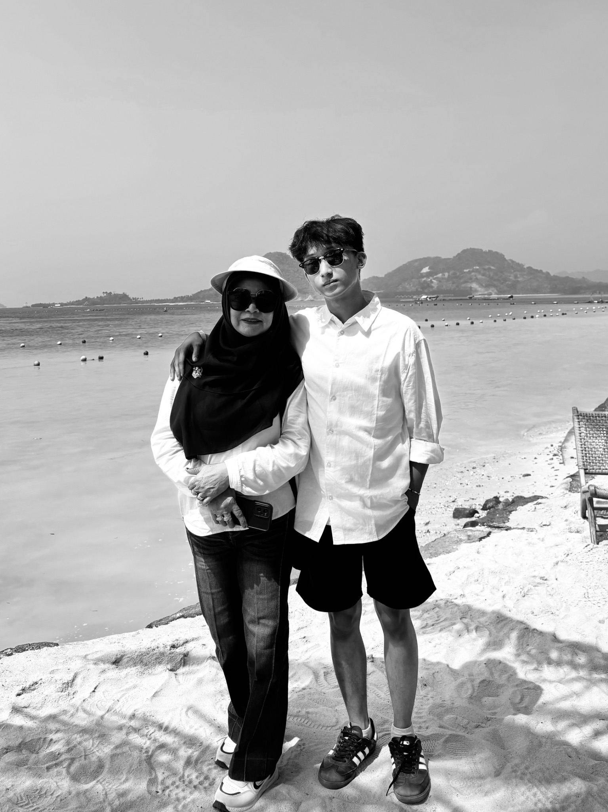

A note for Mom
My first home,
my beloved angel.
I love my mom, even though I've never really said it out loud.
I know I may seem distant sometimes, especially around her. But the truth is, I've just never been very good at showing how much I care.
There are so many things I've wanted to say to her, so many words that somehow never made it past my thoughts.
Maybe one day I'll learn how to say them properly.
But for now, I hope she somehow knows.
I've never been good at saying it, but I hope somehow, in all the little things, she knows.
I love you, Mom. My first home, my beloved angel.
— Farhan